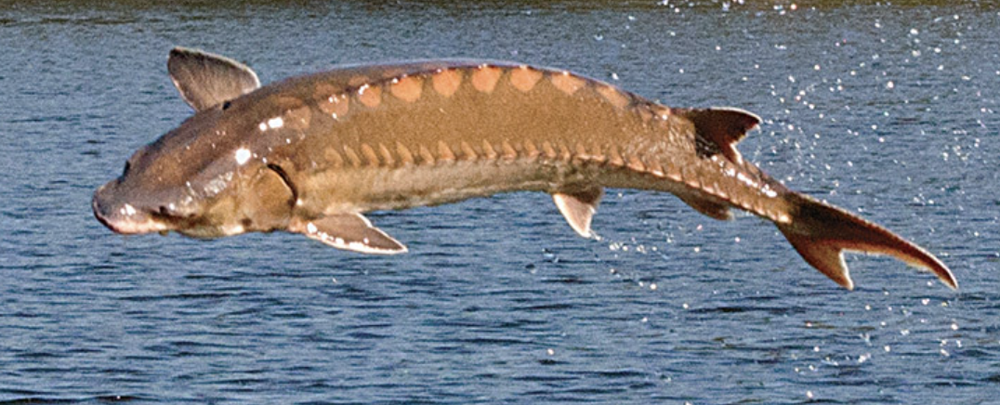

The story follows Yedigei's trek across the Sary-Ozek steppes in Kazajhstan to bury his friend Kazangap,
while simultaneously depicting a space mission where American and Soviet cosmonauts make contact with extraterrestrials.
The title.
The Novyi mir version of the novel used the line from Pasternak's poem for the title.
Airmatov wanted to title his novel the Hoop: invoking the hoop on the head of mankurt and the hoop that Cold War rivals put on the globe, thus limiting potential of humanity. A wishful thinking and the belief in the goodness of humanity.
The Union of Soviet Writers preferred the title The Railroad Junction Burannyi

Heterotopia in Chingiz Aitmatov’s novels functions as a "counter-site" or "other space," creating a physical and symbolic refuge where cultural, spiritual, or mythic realities exist separately from, and in tension with, repressive political or social environments. These settings, such as the remote rail junction in The Day Lasts More Than a Hundred Years, operate as liminal sites where memory, tradition, and humanity are preserved against Soviet modernization. The concept of heterotopia has been coined by a French historian Michel Foucault.
Cultural memory
Mankurt-like characters with erased national memory.
characters , apart from the one in the Naiman-Ana legend, are modern Soviet characters: Sabitzhan, lieutenant Tansykbaev, investigator Tansykbaev